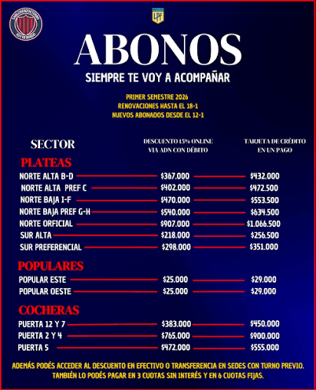
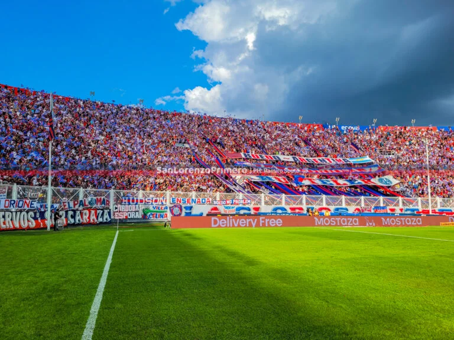

Asociate a San Lorenzo
Formá parte del Club Atlético San Lorenzo y conocé cómo hacerte socio del Ciclón.
Hacete socioTodo sobre el Club Atlético San Lorenzo de Almagro y su gente.
Toda la información que necesitás sobre el Club Atlético San Lorenzo de Almagro.
Conocé las novedades, partidos, entradas, abonos y diferentes formas de acompañar al Ciclón.
Formá parte del Club Atlético San Lorenzo y conocé cómo hacerte socio del Ciclón.
Hacete socio
Conocé toda la información sobre las entradas para alentar a San Lorenzo en sus próximos partidos.
Ver entradas

Conocé toda la información sobre los abonos 2026 para acompañar al Ciclón durante la temporada.
Ver abonos 2026
¿Querés comunicarte con nosotros? Encontrá nuestros medios de contacto y realizá tu consulta.
Contactanos
Conocé las oportunidades para formar parte del equipo de San Lorenzo Primero.
Más informaciónSan Lorenzo Primero es un espacio dedicado a los hinchas del Club Atlético San Lorenzo de Almagro.
En nuestro sitio podés encontrar información sobre el fixture, entradas, abonos 2026, opciones para asociarte y diferentes formas de acompañar al Ciclón.